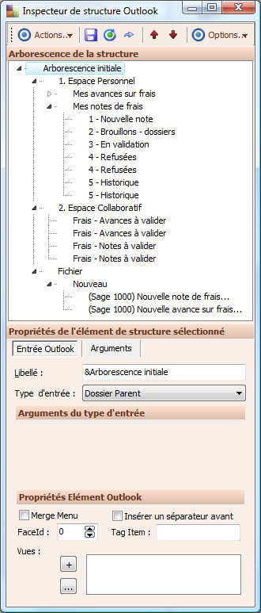
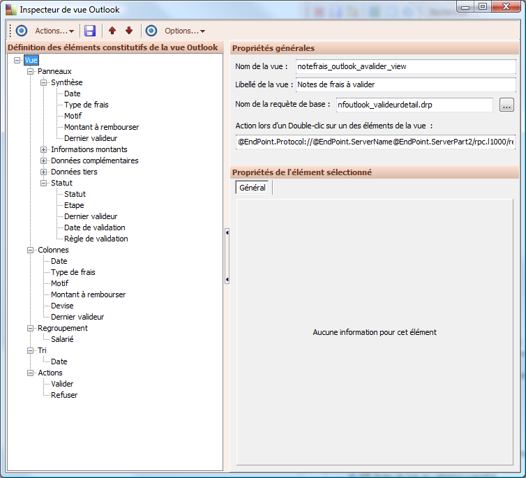
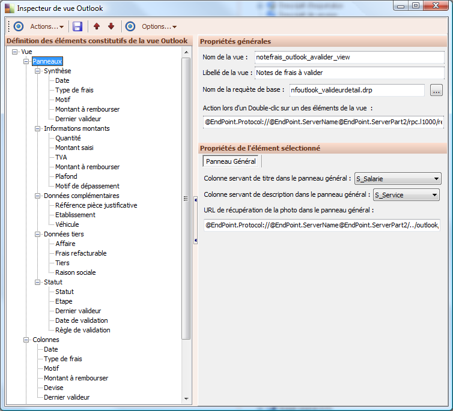
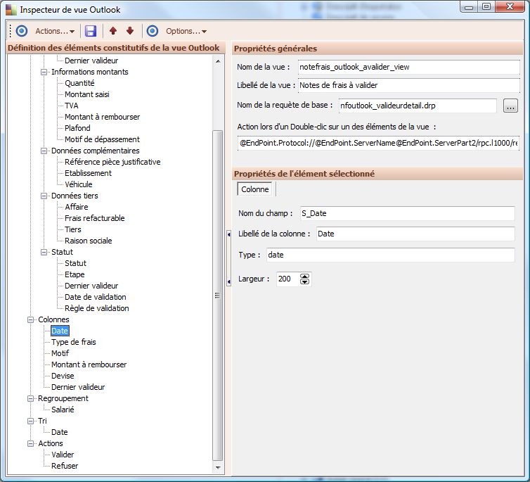
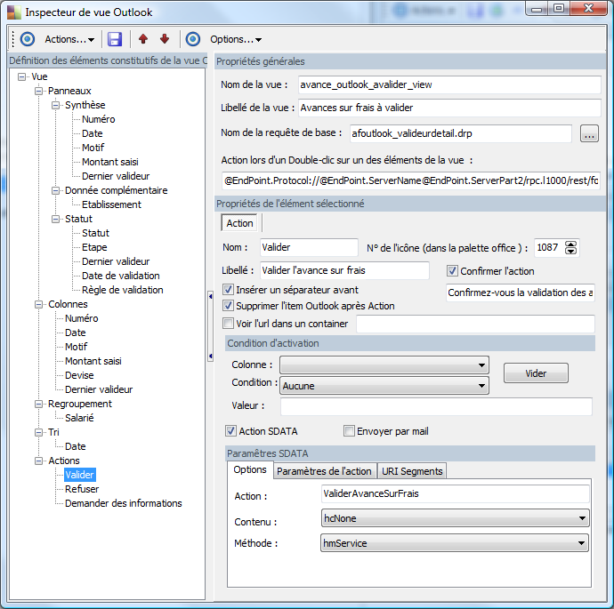

Amendement (outlook)
Sommaire |
Personnalisation & amendement
Domaine Outlook
Le nœud « Domaine Outlook » regroupe les applications pour Outlook et leurs profils.
Applications Outlook : pour la version 6.00, trois applications peuvent être installées :
- Sage 1000 Engagements pour Outlook
- Sage 1000 Notes de Frais pour Outlook
- Sage 1000 Pilotage pour Outlook
Structure
Chaque application dispose d’une structure Outlook. Celle-ci définit l’arborescence visible dans Outlook et éventuellement les actions accessibles à partir du menu d’Outlook.
Ces structures ne sont pas modifiables, seules les vues associées le seront. Détail des structures par application
Structure « Sage 1000 Engagement pour Outlook »
1. ESPACE PERSONNEL
- Mes engagements
- Nouvelle demande
- Non traités
- En validation
- Refusées
- Historique
2. ESPACE COLLABORATIF
- Engagements – A compléter
- Engagements – A valider
- Engagements – Refus à traiter
FICHIER / NOUVEAU
- (Sage 1000) Nouvelle demande d’engagement
Structure « Sage 1000 Notes de frais pour Outlook »
1. ESPACE PERSONNEL
- Mes avances sur frais
- Nouvelle avance
- Brouillons
- En validation
- Refusées
- Historique
- Mes notes de frais
- Nouvelle note
- Brouillons - dossiers
- En validation
- Refusées
- Historique
2. ESPACE COLLABORATIF
- Frais - Avances à valider
- Frais – Notes à valider
FICHIER / NOUVEAU
- (Sage 1000) Nouvelle note de frais
- (Sage 1000) Nouvelle avance sur frais
Structure « Sage 1000 Pilotage pour Outlook »
3. ESPACE ENTREPRISE Inspecteur de structure Outlook Merge menu Permet de fusionner avec le menu d’Outlook (Exemple : Fichier / Nouveau pour la saisie des documents). Type d’entrée La liste déroulante propose les types d’entrée suivants :
- Dossier Flux SData avec rendu HTML via XSLT
- Dossier Lien vers un onglet de portail
Permet d’afficher un onglet de portail dans le dossier.
- Dossier Lien vers une page HTML
- Dossier Query
Pour associer des vues Outlook au dossier.
- Dossier Lien vers un écran applicatif
- Dossier BO Root Menu :
Type d’entrée permettant de générer automatiquement l’arborescence des dossiers BO en fonction des droits de l’utilisateur.

Inspecteur de vue Outlook
Pour les entrées Outlook dont le type d’entrée est « Dossier Query », il faut associer une ou plusieurs vues Outlook. Chaque vue Outlook est composée de plusieurs éléments :
- Propriétés générales
- Contient le nom de la vue ainsi que la requête utilisée pour restituer les informations.
- Panneaux
- Permet d’organiser différents panneaux dans lequel seront affichées les données de la requêe. Dans Outlook, ces panneaux seront affichés dans un volet.
- Colonnes
- Permet de définir les données de la requête qui seront affichées dans la vue d’Outlook.
- Regroupement
- Permet de définir un regroupement par défaut dans la vue d’Outlook.
- Tri
- Permet de définir un tri par défaut sur une colonne et le sens du tri.
- Actions
- Permet d’ajouter différentes actions à la barre d’outils « Sage » dans Outlook.

Propriétés générales
- Nom de la vue
- Libellé de la vue
- Nom de la requête de base
- Indiquer la requête sur laquelle s’appuiera la vue pour restituer les données.
- Action lors d’un Double-clic sur un des éléments de la vue
- Indiquer l’URL de l’action. Permet de définir une action quand on double-clic sur un élément de la vue (exemple : ouverture d’un écran de détail sur une note de frais sélectionnée).

Panneaux Cette partie permet de définir les éléments à afficher dans un volet « Outlook ».
- Colonne servant de titre dans le panneau général
- Colonne servant de description dans le panneau général
- URL de récupération de la photo dans le panneau général

- Colonnes
- Permet de définir les colonnes que l’on souhaite afficher dans la vue Outlook.
- Nom du champ
- Nom du champ de la requête.
- Libellé de la colonne
- Libellé du champ de la requête. Il peut être modifié pour obtenir un libellé différent dans Outlook.
- Type
- Type du champ.
- Largeur
- Largeur du champ.

Actions
Permet de définir des actions pour la vue qui seront accessibles dans la barre d’outils Sage dans Outlook.
- Nom
Nom de l’action.
- N° de l’icône (dans la palette office)
Voici les icônes utilisées dans la barre d’outils Sage pour chaque action :
- Annuler : 1105
- Consultation : 109
- Envoi de mail : 354
- Refuser : 1088
- Réinitialiser : 128
- Valider : 1087
- Libellé
- Info bulle de l’action.
- Confirmer l’action
- Si l’option est cochée, un message d’avertissement apparaîtra au moment où l’action est effectuée. Ce message peut être renseigné sous l’option.
- Insérer un séparateur avant
- Permet d’insérer un séparateur avec l’action dans la barre d’outils Sage.
- Supprimer l’item Outlook après Action
- Supprime l’élément sélectionné de la vue, une fois l’action effectuée.
- Voir l’url dans un container
- Permet d’ouvrir une URL au moment de l’action (exemple : ouverture de l’écran des refus des notes de frais sur l’action « Refuser »).
- Condition d’activation
- Permet d’activer ou non l’action en fonction d’une condition.
- Colonne
- Colonne sur laquelle va s’appliquer la condition.
- Condition
- Permet de renseigner l’opérateur (aucune, =, <>, IN, NOT IN).
- Valeur
- Valeur pour que la condition s’applique.
Action SData / Paramètres SData :
- Options :
- Paramètres de l’action :
- URI Segments :
Envoi par mail : Options :
- Destinataire
- Permet de renseigner les destinataires. En cas de plusieurs adresses email, celles-ci doivent être séparées par des points virgules.
- Objet
- Permet de renseigner l’objet du mail.
- Associer les pièces jointes
- Permet de joindre les documents associés à l’élément sélectionné.
Corps du message Permet de renseigner le message à envoyer aux destinataires.
Observations :
Dans les champs « destinataire », « objet », « Corps », il est possible d’utiliser des variables représentant la valeur de certaines colonnes de l’élément sélectionné dans Outlook. L’élément est toujours représenté par le préfixe « @Entry », ensuite, il suffit de compléter à l’aide des noms de colonnes de la vue. Exemple : Champ destinataire peut être égal à « René[email protected] », mais aussi à « @Entry.S_Salarie_Email », ce qui équivaut à reprendre le contenu de la colonne S_Salarie_Email de la vue Outlook.
| Whos here now: Members 0 Guests 0 Bots & Crawlers 1 |